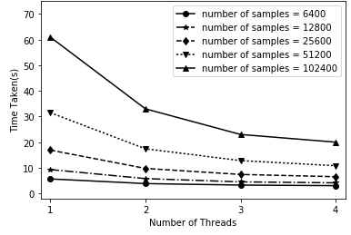

| Publication |
|
Tags |
| 2020 |

|
Aditya Jayasimha*,Tushaar Gangavarapu*, Sowmya Kamath S, and Gokul S Krishnan (2020): Deep Neural Learning for Automated Diagnostic Code Group Prediction Using Unstructured Nursing Notes. In Proceedings of the ACM India Joint International Conference on Data Science and Management of Data (7th ACM IKDD CoDS and 25th COMAD), ACM (pp. 152-160).
abstract
x
Deep Neural Learning for Automated Diagnostic Code Group Prediction Using Unstructured Nursing Notes.
Disease prediction, a central problem in clinical care and management, has gained much significance over the last decade. Nursing notes documented by caregivers contain valuable information concerning a patient's state, which can aid in the development of intelligent clinical prediction systems. Moreover, due to the limited adaptation of structured electronic health records in developing countries, the need for disease prediction from such clinical text has garnered substantial interest from the research community. The availability of large, publicly available databases such as MIMIC-III, and advancements in machine and deep learning models with high predictive capabilities have further facilitated research in this direction. In this work, we model the latent knowledge embedded in the unstructured clinical nursing notes, to address the clinical task of disease prediction as a multi-label classification of ICD-9 code groups. We present EnTAGS, which facilitates aggregation of the data in the clinical nursing notes of a patient, by modeling them independent of one another. To handle the sparsity and high dimensionality of clinical nursing notes effectively, our proposed EnTAGS is built on the topics extracted using Non-negative matrix factorization. Furthermore, we explore the applicability of deep learning models for the clinical task of disease prediction, and assess the reliability of the proposed models using standard evaluation metrics. Our experimental evaluation revealed that the proposed approach consistently exceeded the state-of-the-art prediction model by 1.87% in accuracy, 12.68% in AUPRC, and 11.64% in MCC score.
url (draft)
.pdf
.poster
.bib
x
Deep Neural Learning for Automated Diagnostic Code Group Prediction Using Unstructured Nursing Notes.
@inproceedings{gangavarapu-cods-comad-2020,
title="Deep Neural Learning for Automated Diagnostic Code Group Prediction Using Unstructured Nursing Notes",
author="Jayasimha, Aditya and Gangavarapu, Tushaar and Kamath S, Sowmya and Krishnan, Gokul S",
booktitle="Proceedings of the ACM India Joint International Conference on Data Science and Management of Data",
series = "CoDS-COMAD '20",
year="2020",
publisher="ACM",
address = "New York, NY, USA",
pages="152-160",
numpages = "9",
doi="10.1145/3371158.3371176",
location="Hyderabad, India"
}
|
Conference
clinical decision support systems
deep learning
disease prediction
healthcare analytics
multi-label classification
natural language processing
|
| 2019 |

|
Tushaar Gangavarapu*, Aditya Jayasimha, Gokul S Krishnan, and Sowmya Kamath S (2019): Predicting ICD-9 code groups with fuzzy similarity based supervised multi-label classification of unstructured clinical nursing notes. Knowledge-Based Systems (KnoSys), Elsevier 105321.
abstract
x
Predicting ICD-9 code groups with fuzzy similarity based supervised multi-label classification of unstructured clinical nursing notes.
In hospitals, caregivers are trained to chronicle the subtle changes in the clinical conditions of a patient at regular intervals, for enabling decision-making. Caregivers’ text-based clinical notes are a significant source of rich patient-specific data, that can facilitate effective clinical decision support, despite which, this treasure-trove of data remains largely unexplored for supporting the prediction of clinical outcomes. The application of sophisticated data modeling and prediction algorithms with greater computational capacity have made disease prediction from raw clinical notes a relevant problem. In this paper, we propose an approach based on vector space and topic modeling, to structure the raw clinical data by capturing the semantic information in the nursing notes. Fuzzy similarity based data cleansing approach was used to merge anomalous and redundant patient data. Furthermore, we utilize eight supervised multi-label classification models to facilitate disease (ICD-9 code group) prediction. We present an exhaustive comparative study to evaluate the performance of the proposed approaches using standard evaluation metrics. Experimental validation on MIMIC-III, an open database, underscored the superior performance of the proposed Term weighting of unstructured notes AGgregated using fuzzy Similarity (TAGS) model, which consistently outperformed the state-of-the-art structured data based approach by 7.79% in AUPRC and 1.24% in AUROC.
url
.pdf (draft)
.bib
x
Predicting ICD-9 code groups with fuzzy similarity based supervised multi-label classification of unstructured clinical nursing notes.
@article{gangavarapu-knosys-2019,
author = "Tushaar Gangavarapu and Aditya Jayasimha and Gokul S. Krishnan and Sowmya Kamath S.",
title = "Predicting ICD-9 code groups with fuzzy similarity based supervised multi-label classification of unstructured clinical nursing notes",
journal = "Knowledge-Based Systems",
pages = "105321",
year = "2019",
issn = "0950-7051",
doi = "https://doi.org/10.1016/j.knosys.2019.105321",
url = "http://www.sciencedirect.com/science/article/pii/S0950705119305982"
}
|
Journal
clinical decision support systems
disease prediction
healthcare analytics
ICD-9 code group prediction
machine learning
natural language processing
|

|
Tushaar Gangavarapu*, Gokul S Krishnan, and Sowmya Kamath S (2019): Coherence-based Modeling of Clinical Concepts Inferred from Heterogeneous Clinical Notes for ICU Patient Risk Stratification. In Proceedings of the 23rd Conference on Computational Natural Language Learning (CoNLL), ACL (pp. 152-160).
abstract
x
Coherence-based Modeling of Clinical Concepts Inferred from Heterogeneous Clinical Notes for ICU Patient Risk Stratification.
In hospitals, critical care patients are often susceptible to various complications that adversely affect their morbidity and mortality. Digitized patient data from Electronic Health Records (EHRs) can be utilized to facilitate risk stratification accurately and provide prioritized care. Existing clinical decision support systems are heavily reliant on the structured nature of the EHRs. However, the valuable patient-specific data contained in unstructured clinical notes are often manually transcribed into EHRs. The prolific use of extensive medical jargon, heterogeneity, sparsity, rawness, inconsistent abbreviations, and complex structure of the clinical notes poses significant challenges, and also results in a loss of information during the manual conversion process. In this work, we employ two coherence-based topic modeling approaches to model the free-text in the unstructured clinical nursing notes and capture its semantic textual features with the emphasis on human interpretability. Furthermore, we present FarSight, a long-term aggregation mechanism intended to detect the onset of disease with the earliest recorded symptoms and infections. We utilize the predictive capabilities of deep neural models for the clinical task of risk stratification through ICD-9 code group prediction. Our experimental validation on MIMIC-III (v1.4) database underlined the efficacy ofFarSight with coherence-based topic modeling, in extracting discriminative clinical features from the unstructured nursing notes. The proposed approach achieved a superior predictive performance when benchmarked against the structured EHR data based state-of-the-art model, with an improvement of 11.50% in AUPRC and 1.16% in AUROC.
url
.pdf
.poster
.bib
x
Coherence-based Modeling of Clinical Concepts Inferred from Heterogeneous Clinical Notes for ICU Patient Risk Stratification.
@inproceedings{gangavarapu-conll-2019,
title = "Coherence-based Modeling of Clinical Concepts Inferred from Heterogeneous Clinical Notes for {ICU} Patient Risk Stratification",
author = "Gangavarapu, Tushaar and Krishnan, Gokul S and Kamath S, Sowmya",
booktitle = "Proceedings of the 23rd Conference on Computational Natural Language Learning (CoNLL)",
month = "Nov",
year = "2019",
address = "Hong Kong, China",
publisher = "Association for Computational Linguistics",
url = "https://www.aclweb.org/anthology/K19-1095",
doi = "10.18653/v1/K19-1095",
pages = "1012-1022"
}
|
Conference
healthcare analytics
clinical decision support systems
disease prediction
multi-label classification
natural language processing
deep learning
|

|
Tushaar Gangavarapu*, Himadri Pal, Pratyush Prakash, Suraj Hegde, and Geetha V (2019): Parallel OpenMP and CUDA Implementations of the N-Body Problem. In Proceedings of the 20th International Conference on Computational Science and Its Applications (ICCSA), Springer (LNCS 11619, pp. 193–208).
abstract
x
Parallel OpenMP and CUDA Implementations of the N-Body Problem.
The N-body problem, in the field of astrophysics, predicts the movements of the planets and their gravitational interactions. This paper aims at developing efficient and high-performance implementations of two versions of the N-body problem. Adaptive tree structures are widely used in N-body simulations. Building and storing the tree and the need for work-load balancing pose significant challenges in high-performance implementations. Our implementations use various cores in CPU and GPU via efficient work-load balancing with data and task parallelization. The contributions include OpenMP and Nvidia CUDA implementations to parallelize force computation and mass distribution, and achieve competitive performance in terms of speedup and running time which is empirically justified and graphed. This research not only aids as an alternative to complex simulations but also to other big data applications requiring work-load distribution and computationally expensive procedures.
url
.pdf (draft)
.slides
.bib
x
Parallel OpenMP and CUDA Implementations of the N-Body Problem.
@inproceedings{gangavarapu-iccsa-2019,
author="Gangavarapu, Tushaar and Pal, Himadri and Prakash, Pratyush and Hegde, Suraj and Geetha, V.",
title="Parallel OpenMP and CUDA Implementations of the N-Body Problem",
booktitle="Computational Science and Its Applications - ICCSA 2019",
year="2019",
publisher="Springer International Publishing",
address="Cham",
pages="193-208",
isbn="978-3-030-24289-3"
}
code
|
Conference
all-pairs algorithm
Barnes-Hut algorithm
CUDA N-body simulations
openMP
parallel processing
performance
|

|
Tushaar Gangavarapu*, Aditya Jayasimha, Gokul S Krishnan, and Sowmya Kamath S (2019): TAGS: Towards Automated Classification of Unstructured Clinical Nursing Notes. In Proceedings of the 20th International Conference on Applications of Natural Language to Information Systems (NLDB), Springer (LNCS 11608, pp. 195–207).
abstract
x
TAGS: Towards Automated Classification of Unstructured Clinical Nursing Notes.
Accurate risk management and disease prediction are vital in intensive care units to channel prompt care to patients in critical conditions and aid medical personnel in effective decision making. Clinical nursing notes document subjective assessments and crucial information of a patient’s state, which is mostly lost when transcribed into Electronic Medical Records (EMRs). The Clinical Decision Support Systems (CDSSs) in the existing body of literature are heavily dependent on the structured nature of EMRs. Moreover, works which aim at benchmarking deep learning models are limited. In this paper, we aim at leveraging the underutilized treasure-trove of patient-specific information present in the unstructured clinical nursing notes towards the development of CDSSs. We present a fuzzy token-based similarity approach to aggregate voluminous clinical documentations of a patient. To structure the free-text in the unstructured notes, vector space and coherence-based topic modeling approaches that capture the syntactic and latent semantic information are presented. Furthermore, we utilize the predictive capabilities of deep neural architectures for disease prediction as ICD-9 code group. Experimental validation revealed that the proposed Term weighting of unstructured notes AGgregated using fuzzy Similarity (TAGS) model outperformed the state-of-the-art model by 5% in AUPRC and 1.55% in AUROC.
url
.pdf (draft)
.slides
.bib
x
TAGS: Towards Automated Classification of Unstructured Clinical Nursing Notes.
@inproceedings{gangavarapu-nldb-2019,
author="Gangavarapu, Tushaar and Jayasimha, Aditya and Krishnan, Gokul S. and Kamath S., Sowmya",
title="TAGS: Towards Automated Classification of Unstructured Clinical Nursing Notes",
booktitle="Natural Language Processing and Information Systems",
year="2019",
publisher="Springer International Publishing",
address="Cham",
pages="195-207",
isbn="978-3-030-23281-8"
}
|
Conference
healthcare analytics
disease group prediction
natural language processing
risk assessment systems
deep learning
|

|
Tushaar Gangavarapu* and Nagamma Patil (2019): A novel filter—wrapper hybrid greedy ensemble approach optimized using the genetic algorithm to reduce the dimensionality of high-dimensional biomedical datasets. Applied Soft Computing (ASOC), Elsevier 81:105538.
abstract
x
A novel filter—wrapper hybrid greedy ensemble approach optimized using the genetic algorithm to reduce the dimensionality of high-dimensional biomedical datasets.
The predictive accuracy of high-dimensional biomedical datasets is often dwindled by many irrelevant and redundant molecular disease diagnosis features. Dimensionality reduction aims at finding a feature subspace that preserves the predictive accuracy while eliminating noise and curtailing the high computational cost of training. The applicability of a particular feature selection technique is heavily reliant on the ability of that technique to match the problem structure and to capture the inherent patterns in the data. In this paper, we propose a novel filter—wrapper hybrid ensemble feature selection approach based on the weighted occurrence frequency and the penalty scheme, to obtain the most discriminative and instructive feature subspace. The proposed approach engenders an optimal feature subspace by greedily combining the feature subspaces obtained from various predetermined base feature selection techniques. Furthermore, the base feature subspaces are penalized based on specific performance dependent penalty parameters. We leverage effective heuristic search strategies including the greedy parameter-wise optimization and the Genetic Algorithm (GA) to optimize the subspace ensembling process. The effectiveness, robustness, and flexibility of the proposed hybrid greedy ensemble approach in comparison with the base feature selection techniques, and prolific filter and state-of-the-art wrapper methods are justified by empirical analysis on three distinct high-dimensional biomedical datasets. Experimental validation revealed that the proposed greedy approach, when optimized using GA, outperformed the selected base feature selection techniques by 4.17%–15.14% in terms of the prediction accuracy.
url
.pdf (draft)
.slides
.bib
x
A novel filter–wrapper hybrid greedy ensemble approach optimized using the genetic algorithm to reduce the dimensionality of high-dimensional biomedical datasets.
@article{gangavarapu-asoc-2019,
title = "A novel filter–wrapper hybrid greedy ensemble approach optimized using the genetic algorithm to reduce the dimensionality of high-dimensional biomedical datasets",
journal = "Applied Soft Computing",
volume = "81",
pages = "105538",
year = "2019",
issn = "1568-4946",
doi = "https://doi.org/10.1016/j.asoc.2019.105538",
url = "http://www.sciencedirect.com/science/article/pii/S156849461930314X",
author = "Tushaar Gangavarapu and Nagamma Patil",
}
|
Journal
biomedical data
genetic algorithm
greedy ensemble
high-dimensional data
hybrid feature selection
parameter optimization
|

|
Tushaar Gangavarapu* and Jaidhar CD (2019): An Empirical Study to Detect the Collision Rate in Similarity Hashing Algorithm Using MD5. In Proceedings of the 5th International Conference on Data Science and Engineering (ICDSE), IEEE (pp. 11-14).
abstract
x
An Empirical Study to Detect the Collision Rate in Similarity Hashing Algorithm Using MD5.
Similarity Hashing (SimHash) is a widely used locality-sensitive hashing algorithm employed in the detection of similarity, in large-scale data processing, including plagiarism detection and near-duplicate web document detection. Collision resistance is a crucial property of cryptographic hash algorithms that are used to verify the message integrity in internet security applications. A hash function is said to be collision-resistant if it is hard to find two different inputs that hash to the same output. In this paper, we present an empirical study to facilitate the detection of collision rate when SimHash is employed to check the integrity of the message. The analysis was performed using bit sequences with length varying from 2 to 32 and Message Digest 5 (MD5) as the internal hash function. Furthermore, to enable faster collision detection with more significant speedup and efficient space utilization, we parallelized the process using a distributed data-parallel approach with synchronous computation and optimum load balancing. Collision detection is desirable, owing to its applicability in digital signature systems, proof-of-work systems, and distributed content systems. Our empirical study revealed a collision rate of 0% to 0.048% in SimHash (with MD5) with the variation in the length of the bit sequence.
url (draft)
.pdf
.bib
x
An Empirical Study to Detect the Collision Rate in Similarity Hashing Algorithm Using MD5.
@inproceedings{gangavarapu-icdse-2019,
author="Tushaar Gangavarapu and Jaidhar CD",
booktitle="2019 International Conference on Data Science and Engineering (ICDSE)",
title="An Empirical Study to Detect the Collision Rate in Similarity Hashing Algorithm Using MD5",
year={2019},
pages={11-14},
month={Sep}
}
|
Conference
collision rate
collision search
integrity
MD5
SimHash
|
| 2018 |
|

|
Bhabesh Chanduka*, Tushaar Gangavarapu, and Jaidhar CD (2018): A Single Program Multiple Data Algorithm for Feature Selection. In Proceedings of the 18th Intelligent Systems Design and Applications (ISDA), Springer (AISC 940, pp. 1-11).
abstract
x
A Single Program Multiple Data Algorithm for Feature Selection.
Feature selection is a critical component in data science and has been the topic of research for many years. Advances in hardware and the availability of better multiprocessing platforms have enabled parallel computing to reach very high levels of performance. Minimum Redundancy Maximum Relevance (mRMR) is a powerful feature selection technique used in many applications. In this paper, we present a novel optimized Single Program Multiple Data (SPMD) approach to implement the mRMR algorithm with synchronous computation, optimum load balancing and greater speedup than task-parallel approaches. The experimental results presented using multiple synthesized datasets prove the efficiency and scalability of the proposed technique over original mRMR.
url
.pdf (draft)
.slides
.bib
x
A Single Program Multiple Data Algorithm for Feature Selection.
@inproceedings{gangavarapu-isda-2018,
author="Chanduka, Bhabesh and Gangavarapu, Tushaar and Jaidhar, CD",
title="A Single Program Multiple Data Algorithm for Feature Selection",
booktitle="Intelligent Systems Design and Applications",
year="2020",
publisher="Springer International Publishing",
address="Cham",
pages="662-672",
}
code
|
Conference
feature selection
parallel
SPMD
mRMR
|